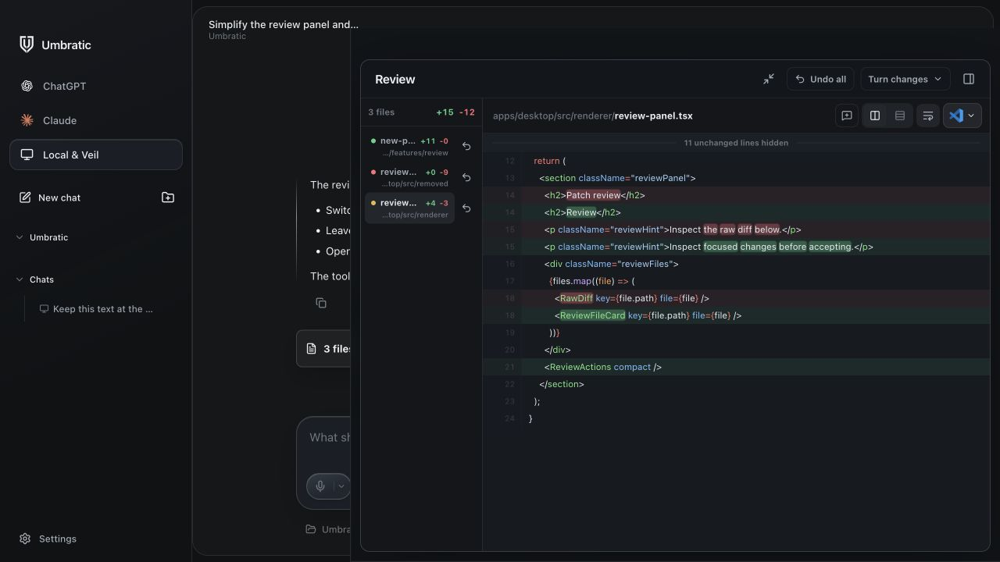

Umbratic

Creator & Engineer Project · 2025 - present
The AI workspace I build in, every day.
- Architecture
- Electron and React desktop, Rust execution runtime, and a Go gateway. Local models, your own server, ChatGPT, or Claude.
- Runtime design
- Dependency-aware parallel tools, context compaction, resumable state, bounded retries, and permission boundaries.
- Engineering
- I define interfaces and acceptance criteria, direct scoped agents, review patches, and validate the integrated system.
Engineering details
Image references, project chats, live steering, queued prompts, and a compact review panel. File-level feedback and editor shortcuts keep the next step close. The runtime handles permissions, cancellation, context, and artifact tools.
Open source under the MIT License. I use it as a working environment and keep improving the details as I go.